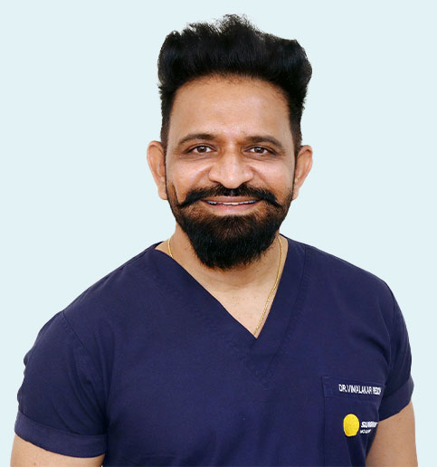
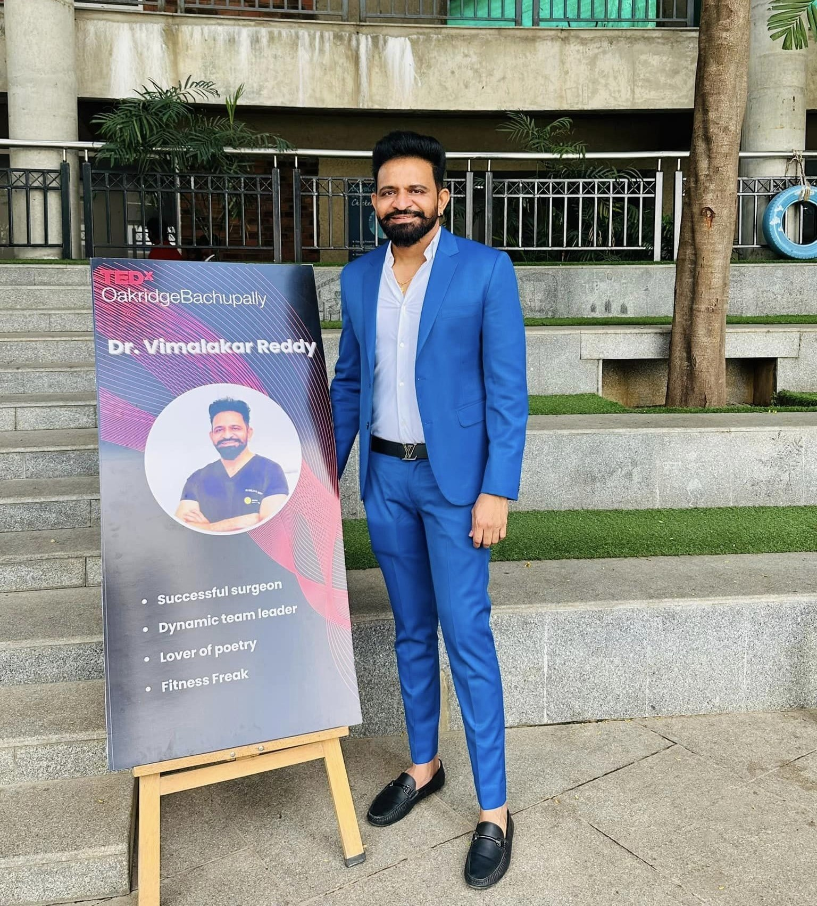
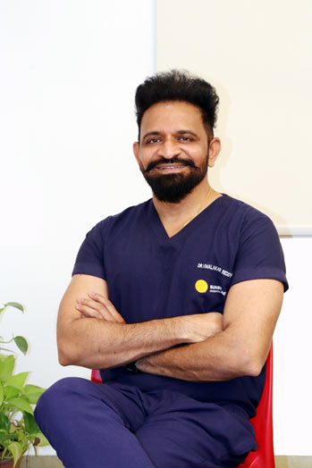
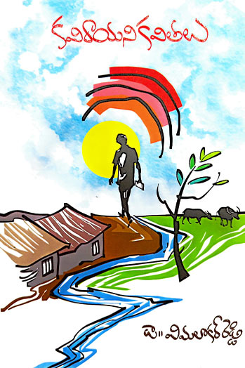
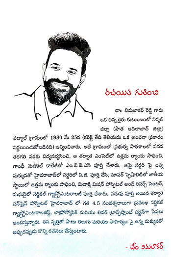

<!DOCTYPE html>
<html lang="en">

<head>
    <!--====== Required meta tags ======-->
    <meta charset="utf-8">
    <meta http-equiv="x-ua-compatible" content="ie=edge">
    <meta name="viewport" content="width=device-width, initial-scale=1, shrink-to-fit=no">
    <!--====== Title ======-->
    <title>Dr E Vimalakar Reddy | Surgical Gastroenterologist in Hyderabad</title>
    <meta name="description"
        content="Dr. Vimalakar is surgical Gastroenterologist, Hepato-Pancreatico-biliary, Colorectal, GI Oncology, Bariatrics, Advanced Laparoscopy & Liver transplantation specialist in Hyderabad.">
    <link rel="shortcut icon" href="assets/images/favicon.png" type="image/png">
    <link rel="stylesheet" href="assets/css/bootstrap.min.css">
    <!-- <link rel="stylesheet" href="assets/fonts/flaticon/flaticon.css"> -->
    <link rel="stylesheet" href="assets/css/owl.carousel.min.css">
    <link rel="stylesheet" href="assets/css/all.css">
    <link rel="stylesheet" href="assets/css/style.css">
    <link rel="stylesheet" href="assets/css/responsive.css">
    <link
        href="https://fonts.googleapis.com/css2?family=Open+Sans:ital,wght@0,300;0,400;0,500;0,600;0,700;0,800;1,300;1,400;1,500;1,600;1,700;1,800&display=swap"
        rel="stylesheet">
    <!-- Google tag (gtag.js) -->
    <script async src="https://www.googletagmanager.com/gtag/js?id=G-9R4E8FRCBL"></script>
    <script>
        window.dataLayer = window.dataLayer || [];

        function gtag() {
            dataLayer.push(arguments);
        }
        gtag('js', new Date());

        gtag('config', 'G-9R4E8FRCBL');
    </script>
</head>

<body>
    <div class="pagewrap">
        <div class="pagebg"></div>
        <header class="header-area header-area-v2 transparent-header">
            <div class="header-navigation">
                <div class="nav-container">
                    <div class="container">
                        <div class="site-branding">
                            <div class="brand-logo">
                                <a href="index.html"></a>
                            </div>
                        </div>
                        <div class="nav-menu">
                            <div class="navbar-close">
                                <div class="cross-wrap"><span class="top"></span><span class="bottom"></span></div>
                            </div>
                            <nav class="main-menu">
                                <ul>
                                    <li class="menu-item "><a href="index.html">Home</a></li>
                                    <li class="menu-item menu-item-has-children"><a href="#">About</a>
                                        <ul class="sub-menu custom_small_sub">
                                            <li class="menu-item"><a href="dr-vimalakar-reddy.html">Dr Vimalakar
                                                    Reddy</a></li>
                                            <li class="menu-item"><a href="team-members.html">Team vimalakar</a></li>
                                        </ul>
                                    </li>
                                    <li class="menu-item menu-item-has-children"><a href="#">Services</a>
                                        <ul class="sub-menu">
                                            <li><a href="esophagus-surgery-hyderabad.html">Esophagus
                                                    Problem</a></li>
                                            <li><a href="stomach-cancer-treatment-hyderabad.html">Stomach
                                                    Problems</a></li>
                                            <li><a href="intestine-surgery-hyderabad.html">Intestine
                                                    Problems</a></li>
                                            <li><a href="liver-surgery-hyderabad.html">Liver Deseases</a>
                                            </li>
                                            <li><a href="portal-hypertension-hyderabad.html">Portal
                                                    hypertension</a></li>
                                            <li><a href="gall-bladder-bile-duct-treatment-hyderabad.html">Gall
                                                    Bladder & Bileduct Problems</a></li>
                                            <li><a href="pancreas-surgery-hyderabad.html">Pancreatic
                                                    Problems</a></li>
                                            <li><a href="bariatric-surgery-hyderabad.html">Bariatric
                                                    Surgeries</a></li>
                                            <li><a href="hernia-surgery-hyderabad.html">Hernia
                                                    Surgeries</a></li>
                                            <li><a href="abdominal-cancer-surgeries-hyderabad.html">Abdominal
                                                    Cancer Surgeries</a></li>
                                            <li><a href="laparoscopic-surgeries-hyderabad.html">Laparoscopic
                                                    Surgeries</a></li>
                                            <li><a href="emergency-abdominal-surgeries-hyderabad.html">Emergency
                                                    Abdominal Surgeries</a></li>
                                            <li><a href="perianal-treatment-hyderabad.html">Perianal
                                                    Diseases</a></li>
                                        </ul>
                                    </li>
                                    <li class="menu-item menu-item-has-children"><a href="#">Media</a>
                                        <ul class="sub-menu custom_small_sub">
                                            <li><a href="images.html">Images</a></li>
                                            <li class="menu-item menu-item-has-children"><a href="#">Videos</a>
                                                <ul class="sub-menu custom_small_sub">
                                                    <li><a href="video-testimonials.html">Patient Testimonials</a></li>
                                                    <li><a href="educational-videos.html">Educational Videos</a></li>
                                                    <li><a href="surgical-videos.html">Surgical Videos</a></li>
                                                </ul>
                                            </li>
                                            <li><a href="blog.html">Blog</a></li>
                                            <li><a href="news.html">News</a></li>
                                            <li><a href="articles.html">Articles</a></li>
                                        </ul>
                                    </li>
                                    <li class="menu-item"><a href="interesting-stories.html">Interesting Stories</a>
                                    </li>
                                    <li class="menu-item menu-item-has-children"><a href="#">Testimonials</a>
                                        <ul class="sub-menu custom_small_sub">
                                            <li class="menu-item"><a href="feedbacks.html">Feedbacks</a></li>
                                            <li class="menu-item"><a href="video-testimonials.html">Video
                                                    Testimonials</a></li>
                                        </ul>
                                    </li>
                                    <li class="menu-item"><a href="contact.html">Contact</a></li>
                                </ul>
                            </nav>
                        </div>
                        <div class="navbar-toggler">
                            <span></span><span></span><span></span>
                        </div>
                        <a class="appbnt main-btn" data-bs-toggle="modal" data-bs-target="#appntmodal">Book An
                            Appointment</a>
                        <div class="topheader">
                            <ul>
                                <li><a href="tel:+917680924108"><span>For Appointments:</span> +91 76809 24108</a></li>
                                <li><a href="mailto:teamvimalakar@gmail.com"><span>Mail:</span>
                                        teamvimalakar@gmail.com</a></li>
                            </ul>
                        </div>
                    </div>
                </div>
            </div>
        </header>

        <div id="appntmodal" class="modal appntmodal fade" role="dialog" tabindex="-1">
            <div class="modal-dialog appnt_dialouge">
                <div class="modal-content appnt_contrt">
                    <div class="modal-header">
                        <button type="button" class="close" data-bs-dismiss="modal">X</button>
                    </div>
                    <div class="modal-body appntbody">
                        <div class="appointment-form default-form">
                            <h2>Book Your Appointment</h2>
                            <p>Fill out the form below and we will contact you during our working hours.</p>
                            <form method="post" action="contact.php">
                                <div class="row">
                                    <div class="col-md-6">
                                        <div class="form-group">
                                            <input class="form-control" placeholder="Name" name="name" required="">
                                            <i class="fa fa-user"></i>
                                        </div>
                                    </div>
                                    <div class="col-md-6">
                                        <div class="form-group">
                                            <input class="form-control" placeholder="Email" name="email" required="">
                                            <i class="fa fa-envelope"></i>
                                        </div>
                                    </div>
                                    <div class="col-md-6">
                                        <div class="form-group">
                                            <input class="form-control" pattern="[6789][0-9]{9}"
                                                title="Please enter valid phone number" placeholder="Phone Number"
                                                name="phone" required="">
                                            <i class="fa fa-mobile"></i>
                                        </div>
                                    </div>
                                    <div class="col-md-6">
                                        <div class="form-group">
                                            <input class="form-control" name="dt-local" type="datetime-local"
                                                required="">
                                            <i class="fa fa-calendar-alt"></i>
                                        </div>
                                    </div>
                                    <div class="col-md-12">
                                        <div class="form-group">
                                            <textarea class="form-control" placeholder="Message..." name="message"
                                                required=""></textarea>
                                            <i class="fa fa-envelope"></i>
                                        </div>
                                    </div>
                                    <div class="col-md-12">
                                        <button class="theme-btn btn-style-one bg-dodgerblue" type="submit"
                                            name="appointment"><span class="btn-title">Submit</span></button>
                                    </div>
                                </div>
                            </form>
                        </div>
                    </div>
                </div>
            </div>
        </div>

        <div class="social-links">
            <ul class="social-icon-one">
                <li><a href="https://www.facebook.com/dr.vimalakarreddyeppa/" target="_blank"><span
                            class="fab fa-facebook-f"></span></a></li>
                <li><a href="https://www.youtube.com/user/vimalakarreddy/" target="_blank"><span
                            class="fab fa-youtube"></span></a></li>
                <li><a href="https://api.whatsapp.com/send?phone=917680924108&text=" target="_blank"><span
                            class="fab fa-whatsapp"></span></a></li>
                <li><a href="https://www.instagram.com/vimalakarreddyeppa/" target="_blank"><span
                            class="fab fa-instagram"></span></a></li>
                <li><a href="https://in.linkedin.com/in/dr-vimalakar-reddy" target="_blank"><span
                            class="fab fa-linkedin-in"></span></a></li>
                <li><a href="https://www.pinterest.com/drvimalakarreddy/" target="_blank"><span
                            class="fab fa-pinterest"></span></a></li>
            </ul>
        </div>

        <!-- bread cumb section -->
        <section class="breadcrumb">
            <div class="container">
                <h1>Dr Vimalakar Reddy </h1>
                <ul itemscope="" itemtype="http://schema.org/BreadcrumbList">
                    <li itemprop="itemListElement" itemscope="" itemtype="http://schema.org/ListItem">
                        <a href="index.html" itemprop="item"><span itemprop="name">Home</span></a>
                        <meta itemprop="position" content="1">
                    </li>
                    <li itemprop="itemListElement" itemscope="" itemtype="http://schema.org/ListItem">
                        <a href="#" itemprop="item"><span itemprop="name">About</span></a>
                        <meta itemprop="position" content="2">
                    </li>
                    <li itemprop="itemListElement" itemscope="" itemtype="http://schema.org/ListItem">
                        <a href="dr-vimalakar-reddy.html" itemprop="item"><span itemprop="name">Dr. Vimalakar
                                Reddy</span></a>
                        <meta itemprop="position" content="3">
                    </li>
                </ul>
            </div>
        </section>

        <!-- inner text -->
        <section class="inner_content_text_section">
            <div class="container">
                <div class="row">
                    <div class="col-md-5">
                        <div class="inner_abt_dctr">
                            <div class="doc_pic"></div>
                        </div>
                    </div>
                    <div class="col-md-7">
                        <div class="doctr_info">
                            <h2>Dr. E. Vimalakar Reddy</h2>
                            <h3>MBBS, DNB (Gen. Surg.), DNB (Surg. Gastro.), FACS (USA)</h3>
                            <h4>Sr Consultant & HOD</h4>
                            <h4>Dept of surgical Gastroenterology, Hepato-Pancreatico-biliary, Colorectal, GI Oncology,
                                Bariatrics, Advanced Laparoscopy & Liver transplantation. KIMS-SUNSHINE Hospital</h4>
                            <div class="inner_doc_text pt-2">
                                <p>I was raised in a lower-middle-class family with an agricultural background in the small village of Wadyal, Adilabad district, Telangana, India. Being the first to be educated in my family, I did my schooling at a Government school in Wadyal. My interest in the medical field helped me obtain a high score in EAMCET and graduate from an esteemed institution – Gandhi Medical College, Hyderabad, India. My passion and love for surgery motivated me to take up DNB General Surgery at Kamineni Hospital, where I developed a special interest in the hepatobiliary system. My long-held dream came true when I took up DNB Surgical Gastroenterology at MMHRC in Madurai, where I was nurtured and shaped into the person that I am today.</p>
                            </div>
                        </div>
                    </div>
                </div>
                <div class="clearfix"></div>
                <div class="inner_doc_text mt-3" style="clear: both;">
                    <p>As a young and enthusiastic surgeon, I joined Sunshine Hospital, Hyderabad, as a Consultant in the Department of Surgical Gastroenterology. Over the years, I developed my team and trained them in minimally invasive and bariatric surgeries, and established a successfully running liver transplant program at the same institute. Six years after joining Sunshine Hospital, the institution became KIMS-Sunshine Hospitals, where I continued my journey and expanded my clinical, academic and surgical practice. After a decade of dedicated service with the institution, I moved to Apollo Hospitals, Jubilee Hills, Hyderabad, in 2026, marking the beginning of a new chapter in my professional journey.</p>
                    <p>My motive to be a humane doctor made me extend my services to the underprivileged. This was achieved by educating my patients and using them as a tool to educate the community via peer group meetings, along with the use of social media. My passion for teaching the budding surgeons of my country led me to organize numerous workshops on various intricate surgeries, publish numerous articles, and give lectures in both national and international forums in the simplest of languages to help people understand them better. I serve as the chief reviewer for both national and international journals and serve as a primary investigator for numerous current studies. I have authored many topics in surgical gastroenterology textbooks.</p>
                    <p>My love for poetry led to composing many poems in my mother tongue (Telugu), and I later released a book, “Kavi Rayani Kavithalu.” I have been honored with “Vaidya Shree” and “Best Doctor” awards in the year 2020. In the year 2021, I was given the title Fellow of the American College of Surgeons (FACS).</p>
                </div>
                <div class="inner_doc_info">
                    <h2>Trained In</h2>
                </div>
                <div class="row trained_row justify-content-center">
                    <div class="col-md-4">
                        <div class="trained_list">Advanced GI & HBP Surgeries.</div>
                    </div>
                    <div class="col-md-4">
                        <div class="trained_list">Basic & Advanced laparoscopy.</div>
                    </div>
                    <div class="col-md-4">
                        <div class="trained_list">Basic research experience.</div>
                    </div>
                    <div class="col-md-5">
                        <div class="trained_list">Assisted for 20 liver transplantations (live & cadaveric).</div>
                    </div>
                    <div class="col-md-5">
                        <div class="trained_list">Observer-ship in Liver Transplantation under Prof A.S.Soin.</div>
                    </div>
                </div>
            </div>
        </section>

                <div class="inner_doc_info">
                    <h2>TEDx-Oakridge Bachupally-The story of a young boy who dared to dream</h2>
                </div>
                <div class="row prt_row" id="tedx">
                    <div class="col-md-4 col-6">
                        <div class="prt_list">
                        </div>
                    </div>
                    <div class="col-md-4 col-6">
                        <div class="prt_list">
                        </div>
                    </div>
                    <div class="col-md-4 col-6">
                        <div class="prt_list">
                        </div>
                    </div>

                </div>
                <div class="prty_link"><a href="https://youtu.be/8AS8D8qtyVE?si=mTkoaRDV_orvhRdF" target="_blank">Watch
                        Here</a></div>

                <div class="inner_doc_info">
                    <h2>Poetry</h2>
                </div>
                <div class="row prt_row">
                    <div class="col-md-4 col-6">
                        <div class="prt_list">
                        </div>
                    </div>
                    <div class="col-md-4 col-6">
                        <div class="prt_list"></div>
                    </div>
                    <div class="col-md-4">
                        <div class="prt_list"></div>
                    </div>
                </div>
                <div class="prty_link"><a href="assets/images/about/Vimalakar-Book.pdf" target="_blank">Read More <i
                            class="fa fa-file-pdf"></i></a></div>

                <div class="inner_doc_info">
                    <h2>Education & Experience</h2>
                </div>
                <ol class="ol_styles">
                    <li>FELLOW OF AMERICAN COLLEGE OF SURGEONS (FACS).</li>
                    <li>Adjunct Professor, Dept of Surgical Gastroenterology, ESI HOSPITAL, Sanath nagar, Hyderabad
                    </li>
                    <li>DNB (Surg Gastro), National Board of Examinations, New Delhi. 07/Feb/2013 - 06/Feb/2016
                        (Meenakshi Mission Hospital and Research Center)</li>
                    <li>DNB (Gen Surg), National Board of Examinations, New Delhi. 01/Aug/2007 - 31/July/2011 (Kamineni
                        Institute of Medical Sciences, Hyderabad)</li>
                    <li>MBBS, DR NTRUHS (Gandhi Medical College, Hyderabad.13/Dec/1999 - 30/Dec/2005)
                </ol>
                <div class="inner_doc_info">
                    <h2>Academic achievements at International & national platforms</h2>
                </div>
                <ol class="ol_styles">
                    <li>70+ paper presentations</li>
                    <li>15+ research publications in various journals</li>
                    <li>Authored 2 GI surgery textbook chapters</li>
                    <li>Faculty for national and international level conferences</li>
                    <li>Peer Reviewer for national and international journals</li>
                    <li>Teacher for DNB GI Surgery programme</li>
                    <li>12 years of GI Surgery experience</li>
                    <li>Established and heading the department of GI surgery, Advanced Laparoscopy and Liver
                        transplantation at KIMS-SUNSHNE Hospitals for the past 6+ years.</li>
                </ol>
                <div class="inner_doc_info">
                    <h2>Areas of Expertise</h2>
                </div>
                <ol class="ol_styles">
                    <li>Performed 10000+ Advanced Laparoscopic Surgeries</li>
                    <li>Complex Hepato Pancreatico Biliary Cancer Surgeries</li>
                    <li>Extens ive experience in Gastro intestinal, Colorectal & Bariatric Surgeries</li>
                    <li>Special interest in Liver transplantation</li>
                </ol>
                <div class="inner_doc_info">
                    <h2>Awards</h2>
                </div>
                <ul class="doc_lists">
                    <li><i class="fa fa-check-circle"></i> Organising Secretary - IHPBA Indian chapter, Hyderabad, 2027.</li>
                    <li><i class="fa fa-check-circle"></i> Dr. A.K Chari Oration, TGASICON 2025, Warangal, November 2025.</li>
                    <li><i class="fa fa-check-circle"></i> Won 1st Prize for Video Presentation on Robotic Central Pancreatectomy & Pancreaticogastrostomy, Robo Surg 2025, GMV Nagpur, November 2025.</li>
                    <li><i class="fa fa-check-circle"></i> Best Video - Asian - Pacific Hepato - Pancreato - Biliary Association (APHPBA) 2025, Bangkok.</li>
                    <li><i class="fa fa-check-circle"></i> Best Video - Cystopericystectomy, IASGCON 2025, Chennai, October 2025.</li>
                    <li><i class="fa fa-check-circle"></i> Organising Secretary for IASG Midterm 2025, Hyderabad.</li>
                    <li><i class="fa fa-check-circle"></i> Elected as IASG EC Member 2025-2027.</li>
                    <li><i class="fa fa-check-circle"></i> Awarded best video on Lap RAMPS, IASG Patna 2024.</li>
                    <li><i class="fa fa-check-circle"></i> TEDx Speaker 2023, TEDxOakridge Bachupally, 2023.</li>
                    <li><i class="fa fa-check-circle"></i> Top 10 Surgical Gastroenterologists, HMTV Health care awards - 2023</li>
                    <li><i class="fa fa-check-circle"></i> Selected as best video - lap central pancreatectomy at ACS video library</li>
                    <li><i class="fa fa-check-circle"></i> Adjunct Professor, Dept of Surgical Gastroenterology, ESI Hospital, Sanathnagar, Hyderabad.</li>
                    <li><i class="fa fa-check-circle"></i> Best Researcher Award -INSO Awards, APR-2023.</li>
                    <li><i class="fa fa-check-circle"></i> Best Video Presentation for Total Laparoscopic Whipple in Jaipur Surgical Fest, Dec-2022.</li>
                    <li><i class="fa fa-check-circle"></i> Conferred with the Fellow of American College of Surgeons (FACS) in OCTOBER 2021.</li>
                    <li><i class="fa fa-check-circle"></i> Bursary award in AMASICON 2020 for SPECTRUM OF LAPAROSCOPY IN CBD PATHOLOGIES - Poster presentation.</li>
                    <li><i class="fa fa-check-circle"></i> Best Doctor Award - by SUMAN ART THEATRE - NOV 2020</li>
                    <li><i class="fa fa-check-circle"></i> Peer Reviewer for Indian Journal of Surgery (Official Journal of ASI).</li>
                    <li><i class="fa fa-check-circle"></i> Peer Reviewer for Journal of Advances in Medicine and Medical Research (JAMMR).</li>
                    <li><i class="fa fa-check-circle"></i> Peer Reviewer for journal of Pharmaceutical Research international.</li>
                    <li><i class="fa fa-check-circle"></i> Peer Reviewer for Asian journal of medicine and health.</li>
                    <li><i class="fa fa-check-circle"></i> Peer Reviewer for Asian Journal of Research in surgery.</li>
                    <li><i class="fa fa-check-circle"></i> Peer Reviewer for American journal of Gastroenterology.</li>
                    <li><i class="fa fa-check-circle"></i> Vaidya Sree Awardee-2019, By Megacity Navakala Vedika, Hyderabad.</li>
                    <li><i class="fa fa-check-circle"></i> Travel Grant Recipient for Best Video Presentation IHPBA2019, SEOUL, KOREA.</li>
                    <li><i class="fa fa-check-circle"></i> Best Video Presentation Awardee for Laparoscopic Central Pancreatectomy for CysticNeoplasm of Pancreas, IASGCON 2014 Ahmadabad.</li>
                    <li><i class="fa fa-check-circle"></i> First Prize on Laparoscopic Left Hepatectomy (Video Presentation Ahmadabad).</li>
                </ul>
                <div class="inner_doc_info">
                    <h2>MEDICAL LICENSE</h2>
                    <p>TELANGANA STATE MEDICAL COUNCIL. REGISTRATION NO : 53552.</p>
                </div>
                <div class="inner_doc_info">
                    <h2>Papers Published</h2>
                </div>
                <ul class="doc_lists">
                    <li><i class="fa fa-check-circle"></i> Impact of ICG Fluorescence Cholangiography on Operative Time and Safety in Laparoscopic Cholecystectomy. A randomised control trail, Annals of Surgery, Royal college of surgery, London, UK, Eppa Vimalakar Reddy, Raju Musham, Ganta Vishnu Vardhan, Ravi Kumar Siddarthan, 2025.</li>
                    <li><i class="fa fa-check-circle"></i> Comprehensive Outcomes of the Frey Procedure : A Single center perspective , Vimalakar R Eppa et al. Eurasian J Hepatogastroenterol. 2024 Jul-dec.</li>
                    <li><i class="fa fa-check-circle"></i> Adult Tracheoesophageal Fistula - A Rare Case Report, Eppa Vimalakar Reddy, Sumesh R, Raju M, Journal of Medical Research, Sep 2024.</li>
                    <li><i class="fa fa-check-circle"></i> A Cross-Sectional Study of One-Year Analysis of Fundus First and Calot’s First Approaches of Laparoscopic Cholecystectomies in a Tertiary Care Centre, Eppa Vimalakar Reddy, Raju Musham, Gourang Shroff, Vishnu Vardhan Rao Ganta, Tropical Gastroenterology 2024;45(1):21-26.</li>
                    <li><i class="fa fa-check-circle"></i> Liver Injury In Covid-19 Infection: A Cross Sectional Study In Tertiary Care Centre. Vimalakar Reddy E, MV Reddy, Babu International Journal Of Scientific Research (2023) 56-59.</li>
                    <li><i class="fa fa-check-circle"></i> Evaluation of 30-day morbidity and mortality of laparoscopic cholecystectomy: a multi-centre prospective observational Indian Association of Gastrointestinal Endoscopic Surgeons (IAGES) Study Thapar V, Thapar P, Mohammed Y, Eppa Vimalakar Reddy, Surgical Endoscopy (2023) 37(4) 2611-2625.</li>
                    <li><i class="fa fa-check-circle"></i> Evaluating Effects of Filgotinib on Semen Parameters in Patients with Inflammatory Diseases, MANTA and MANTA-RAY, Vimalakar Reddy E, Wayne J G Hellstrom et al. Adv Ther. 2022.</li>
                    <li><i class="fa fa-check-circle"></i> Common Bile Duct Pathology - Scope of Laparoscopy Illustrated Case Series Analysis, Vimalakar Reddy E, Musham Raju, Indian Journal of Surgery (2022) 84(5) 1046-1050.</li>
                    <li><i class="fa fa-check-circle"></i> Role of Perioperative C - Reactive Protein and Procalcitonin in Predicting 30-Day Mortality after Major Surgery Eppa Vimalakar Reddy, Ramesh Ardhanari, Mohan Narasimhan, Clinical Surgery Journal (2021) 4(10).</li>
                    <li><i class="fa fa-check-circle"></i> Comparison of Outcomes in Pancreaticogastrostomy versus Pancreaticojejunostomy in Patients Undergoing Pancreaticoduodenectomy, Vimalakar Reddy E, Razvi M, Ardhanari R, Journal of Surgery Research and Practice (2021) 02(01).</li>
                    <li><i class="fa fa-check-circle"></i> Laparoscopic Non-Anatomical Hepatectomy - A Single Center Experience- Vimalakar Reddy E, Gourang Shroff, KV Dinesh Reddy, Raju M. International Journal of Surgery and Clinical Practice 2694-4057,(2020).</li>
                    <li><i class="fa fa-check-circle"></i> Laparoscopic Diaphragmatic Repair: A Single-center Experience, Vimalakar Reddy E, Gourang Shroff, Musham Raju, World Journal of Laparoscopic Surgery (2020) 13(1) 46-50.</li>
                    <li><i class="fa fa-check-circle"></i> Role of Gene Polymorphism in TNF Alpha Expression and Outcome in Surgical Patients, Vimalakar Reddy E, Suresh V, Satyanarayana G, Journal of Advances in Medicine and Medical Research (2020) 1-5.</li>
                    <li><i class="fa fa-check-circle"></i> Laparoscopic Management of Median Arcuate Ligament Syndrome: Single Center Experience, Vimalakar Reddy E, Gourang Shroff, Somayajulu A, World Journal of Laparoscopic Surgery (2019) 12(1) 39-42.</li>
                    <li><i class="fa fa-check-circle"></i> Rectal cancer: Time to change?, Vimalakar Reddy E, Razvi M, Ardhanari Ramesh, The National Medical Journal of India (2015) 28(3) 135-6.</li>
                    <li><i class="fa fa-check-circle"></i> A Rare Case of Childhood Undifferentiated Embryonal Sarcoma of the Liver Managed Successfully, G Gangadhar, Vimalakar Reddy E, Ardhanari Ramesh, ACG Case Reports Journal (2014) 1(2) 74-75.</li>
                    <li><i class="fa fa-check-circle"></i> A Leiomyosarcoma of Oesophagus - Report of Two Cases, Vimalakar Reddy E, Narasimhan M, Ramesh Ardhanari, Journal of Case Reports (2013) 436-43.</li>
                    <li><i class="fa fa-check-circle"></i> Lingual Gastric Duplication Cyst in a Newborn, Vimalakar Reddy E, Ram Mohan G, Sathyanarayana G, Indian Journal of Otolaryngology and Head & Neck Surgery (2011) 63(4) 405-406.</li>
                </ul>
                <div class="inner_doc_info">
                    <h2>BOOK CHAPTERS</h2>
                </div>
                <div class="row exprow_list_">
                    <div class="col-md-6">
                        <div class="exp_list">Vimalakar Reddy, Mohan N, Ramesh Ardhanari. Laparoscopic Abdomino
                            perinealresection. Chapter in Text book of Operative Surgery. Editor: Prof Peush Sahni
                        </div>
                    </div>
                    <div class="col-md-6">
                        <div class="exp_list">Vimalakar Reddy, Mohan N, Ramesh Ardhanari. Hydatid Disease of Liver.Ch
                            67, Textbook of Surgical Gastroenterology. Editor: Prof P.K. Mishra.2016; 26- 43
                        </div>
                    </div>
                </div>
                <div class="inner_doc_info">
                    <h2>ACCOLADES</h2>
                </div>
                <ul class="doc_lists">
                    <li><i class="fa fa-check-circle"></i> Organising Secretary - IHPBA Indian chapter, Hyderabad, 2027.</li>
                    <li><i class="fa fa-check-circle"></i> Dr. A.K Chari Oration, TGASICON 2025, Warangal, November 2025.</li>
                    <li><i class="fa fa-check-circle"></i> Won 1st Prize for Video Presentation on Robotic Central Pancreatectomy & Pancreaticogastrostomy, Robo Surg 2025, GMV Nagpur, November 2025.</li>
                    <li><i class="fa fa-check-circle"></i> Best Video - Asian - Pacific Hepato - Pancreato - Biliary Association (APHPBA) 2025, Bangkok.</li>
                    <li><i class="fa fa-check-circle"></i> Best Video - Cystopericystectomy, IASGCON 2025, Chennai, October 2025.</li>
                    <li><i class="fa fa-check-circle"></i> Organising Secretary for IASG Midterm 2025, Hyderabad.</li>
                    <li><i class="fa fa-check-circle"></i> Elected as IASG EC Member 2025-2027.</li>
                    <li><i class="fa fa-check-circle"></i> Awarded best video on Lap RAMPS, IASG Patna 2024.</li>
                    <li><i class="fa fa-check-circle"></i> TEDx Speaker 2023, TEDxOakridge Bachupally, 2023.</li>
                    <li><i class="fa fa-check-circle"></i> Top 10 Surgical Gastroenterologists, HMTV Health care awards - 2023</li>
                    <li><i class="fa fa-check-circle"></i> Selected as best video - lap central pancreatectomy at ACS video library</li>
                    <li><i class="fa fa-check-circle"></i> Adjunct Professor, Dept of Surgical Gastroenterology, ESI Hospital, Sanathnagar, Hyderabad.</li>
                    <li><i class="fa fa-check-circle"></i> Best Researcher Award -INSO Awards, APR-2023.</li>
                    <li><i class="fa fa-check-circle"></i> Best Video Presentation for Total Laparoscopic Whipple in Jaipur Surgical Fest, Dec-2022.</li>
                    <li><i class="fa fa-check-circle"></i> Conferred with the Fellow of American College of Surgeons (FACS) in OCTOBER 2021.</li>
                    <li><i class="fa fa-check-circle"></i> Bursary award in AMASICON 2020 for SPECTRUM OF LAPAROSCOPY IN CBD PATHOLOGIES - Poster presentation.</li>
                    <li><i class="fa fa-check-circle"></i> Best Doctor Award - by SUMAN ART THEATRE - NOV 2020</li>
                    <li><i class="fa fa-check-circle"></i> Peer Reviewer for Indian Journal of Surgery (Official Journal of ASI).</li>
                    <li><i class="fa fa-check-circle"></i> Peer Reviewer for Journal of Advances in Medicine and Medical Research (JAMMR).</li>
                    <li><i class="fa fa-check-circle"></i> Peer Reviewer for journal of Pharmaceutical Research international.</li>
                    <li><i class="fa fa-check-circle"></i> Peer Reviewer for Asian journal of medicine and health.</li>
                    <li><i class="fa fa-check-circle"></i> Peer Reviewer for Asian Journal of Research in surgery.</li>
                    <li><i class="fa fa-check-circle"></i> Peer Reviewer for American journal of Gastroenterology.</li>
                    <li><i class="fa fa-check-circle"></i> Vaidya Sree Awardee-2019, By Megacity Navakala Vedika, Hyderabad.</li>
                    <li><i class="fa fa-check-circle"></i> Travel Grant Recipient for Best Video Presentation IHPBA2019, SEOUL, KOREA.</li>
                    <li><i class="fa fa-check-circle"></i> Best Video Presentation Awardee for Laparoscopic Central Pancreatectomy for CysticNeoplasm of Pancreas, IASGCON 2014 Ahmadabad.</li>
                    <li><i class="fa fa-check-circle"></i> First Prize on Laparoscopic Left Hepatectomy (Video Presentation Ahmadabad).</li>
                </ul>
                <div class="inner_doc_info">
                    <h2>RESEARCH EXPERIENCE</h2>
                </div>
                <ol class="ol_styles">
                    <li>Clinical (SOFA, APACHE II), Biochemical (CRP, Procalcitonin, TNF Alfa) and molecularmarkers(TNF
                        Alfa gene) to predict the prognosis and outcome of the patient after majorsurgery and trauma
                    </li>
                    <li>Role of Perioperative HsCRP and Procalcitonin in predicting prognosis after major surgery
                    </li>
                    <li>Role of TNF Alpha gene polymorphism at 512 locus in TNF Alpha level Expression inmajor surgery
                        and trauma</li>
                    <li>Role MMP2, MMP9 and TIMP expression in wound healing</li>
                    <li>Role MMP2, MMP9 and TIMP expression in coloncancer</li>
                    <li>Comparison of BISAP Score and APACHE II Criteria in the evaluation of outcome in
                        AcutePancreatitis</li>
                </ol>
                <div class="inner_doc_info">
                    <h2>ONGOING RESEARCH</h2>
                </div>
                <ol class="ol_styles">
                    <li>Pan India hernia study</li>
                    <li>Filgotinib in testicular safety</li>
                    <li>Randomized control trial comparing laparoscopiccholecystectomy with and without icg
                    </li>
                    <li>Gene analysis post freys to predict carcinoma pancreas</li>
                    <li>Retrospective analysis of five years data on lap sleeve</li>
                    <li>Gastrectomy vs lap mini gastric bypass</li>
                    <li>A three years analysis post freys procedure in a tertiary care centre</li>
                        </ol>
                <div class="inner_doc_info">
                    <h2>Papers Presented</h2>
                </div>
                <ol class="ol_styles">
                    <li>Laparoscopic Whipple procedure AMASICON – NOV 2023</li>
                    <li>If I can do so you can – TSASICON OCT 2023</li>
                    <li>Symposium on Energy sources, Lap Whipple procedure, Bangalore – oct 2023 
Medtronics</li>
<li>Pathway for sepsis management post hernia repair, HSICON Yashoda Aug 2023.</li>
<li>Presentation “Got It” by Team Vimalakar – KIMS- SUNSHINE IGOT.</li>
                    <li>Tackling Obesity Pandemic -Association of Family physicians of India-May- 2023.</li>
                    <li>Spectrum of laparoscopy in Pancreatic Pathology-HPB ONCOLOGY, KIMS MANAVATHA NASIK MAY 2023.
                    </li>
                    <li>Spectrum of laparoscopy in Pancreatic Pathology-KSASICON JAN-2023.</li>
                    <li>Laparoscopic Whipple’s Procedure ACS Sandiago USA 2022 (virtual video presentation)-AIIMS
                        Bhubaneswar, USA-2022.</li>
                    <li>Laparoscopic Central Pancreatectomy, Video Presentation ,IASGCON-2022</li>
                    <li>Spectrum of laparoscopy in Pancreatic Diseases-Video Presentation-AUG TSASICON 2022</li>
                    <li>Spectrum of laparoscopy in CBD pathology, Paper Presentation-Aug 2022, TSASICON 2022</li>
                    <li>Techniques In Bowel Anastomosis, TS ASICON 2021</li>
                    <li>Spectrum of laparoscopy in Pancreatic Diseases. ASICON (2020 DEC)</li>
                    <li>Laparoscopic Whipple’s Procedure IASGCON 2021(virtual video presentation)- AIIMS Bhubaneswar.
                    </li>
                    <li>Spectrum of Laparoscopy in CBD pathologies –paper presentation AMASICON-2020 – Nov-2020.</li>
                    <li>Laparoscopic Left Hepatectomy –video presentation – IHPBA – 2020 Virtual – Nov -2020.</li>
                    <li>Spectrum of Laparoscopy in CBD pathologies – Oral presentation– IHPBA -2020 – Virtual – Nov -
                        2020</li>
                    <li>Pancreatico pleural fistuk Aggressive management –Paper presentation – 1 HPBA 2020 – Virtual –
                        Nov – 2020</li>
                    <li>Laparoscopic Management of Median Arcuate Ligament Syndrome: Single Center Experience, Eppa
                        Vimalakar Reddy, Gourang Shroff, Vemula B Reddy, Akella V Phanendra Somayajulu. TSASICON 2019,
                        Warangal.</li>
                    <li>SPECTRUM OF LAPAROSCOPY IN HPB, Video Presentation, E.Vimalakar Reddy, Dr.Gourang Shroff,
                        TSASICON 2019, Warangal.</li>
                    <li>Laparoscopic Non-Anatomical Hepatectomy, Video Presentation, E.Vimalakar Reddy, Dr.Bala Reddy V,
                        Dr.Gourang Shroff, Dr.Kaipu Dinesh Reddy, Dr.Raju Musham. IHPBA 2019, Seoul,Korea.</li>
                    <li>Central Hepatectomy, Video Presentation, E.Vimalakar Redd, Ram Mohan G, Dr V.Bala Reddy. IHPBA
                        2018, Switzerland.</li>
                    <li>Whipples Made Easy, Video Presentation, E.Vimalakar Reddy,Dr V.Bala Reddy. TSASICON 2017.</li>
                    <li>Role of perioperative C - reactive protein and procalcitonin in predicting 30 day mortality
                        after major surgery. Dr. Eppa Vimalakar Reddy, Mustafa Hussain Rizvi, Dr.Mohan Narasimhan,
                        Dr.Ramesh Ardhanari. IASGCON 2015 PUNE.</li>
                    <li>Rare cause of upper GI bleed: Dr Mustafa Hussain Razvi, Dr Eppa Vimalakar Reddy, Dr PL
                        Alagammai, Dr N Mohan, Dr Ramesh Ardhnari. IASGCON 2015</li>
                    <li>Post PTBD stenting gall bladder perforation: Dr Mustafa Hussain Razvi, Dr Eppa Vimalakar Reddy,
                        Dr N Mohan, Dr Ramesh IASGCON 2015</li>
                    <li>Conservative management of pancreatic trauma: Dr Mustafa Hussain Razvi, Dr Eppa Vimalakar Reddy,
                        Dr Avinash Sowdepalle, Dr N Mohan, Dr Ramesh Ardhnari. IHPBA: Hyderabad, 2015</li>
                    <li>HTG pancreatitis incidence, clinical features and management: Dr Mustafa Hussain Razvi, Dr Eppa
                        Vimalakar Reddy, Dr PL Alagammai, Dr N Mohan, Dr Ramesh Ardhnari. IHPBA: Hyderabad, 2015.</li>
                    <li>Management of vascular injury in MAS-A path less travelled. Dr Abhishek Bhagawath, Dr Vimalakar
                        Reddy, Dr Venkat, Dr N Mohan, Dr Ramesh Ardhanari. AMASICON 2015, Mumbai. Best paper</li>
                    <li>Laparoscopic D2 Gastrectomy. Dr Abhishek Bhagawath, Dr Vimalakar Reddy, Dr Venkat, Dr N Mohan,
                        Dr Ramesh Ardhanari. AMASICON 2015, Mumbai.Video Presentation.</li>
                    <li>Post pancreaticoduodenectomy comparision of outcomes in pancreatico gastrostomy versus
                        Pancreatico jejunostomy. Dr Vimalakar Reddy, Dr Aravind Kalyanasundaram, Dr Mustafa Razvi, Dr
                        Alwin Gunaraj, Dr Mohan Narasimhan, Dr Ramesh Ardhanari.
                        ASICON 2014</li>
                    <li>Recent experience with Budd Chiari Syndrome. Eppa Vimalakar Reddy , Mustafa Razvi, Gangadhar rao
                        Gondu , Bhavya Manosila, Mohan Narasimhan, Ramesh ASICON 2014 HYDERABAD.</li>
                    <li>Tuberculosis - A Malignant Dr. Gangadhar Rao Gondu, Dr. Avinash Sowdepalli, Dr. E. Vimalakar
                        Reddy, Dr. Mohan Narasimhan M.S., DNB (SGE),FACS, Dr. Ramesh Ardhanari M.S., MCh (SGE), F.R.C.S.
                        (ASI NATIONAL CONFERENCE 2014, Hyderabad).</li>
                    <li>Laparoscopic left hepatectomy- At two tier city .DR E. Vimalakar Reddy, Nitin Kumar Bansal,
                        J.C.Bose, N Mohan, and Ramesh Ardhanari. (Best E-Video Award- IASGCON 2014 AHMEDABAD)</li>
                    <li>Laparoscopic Central Pancreatectomy for Cystic Neoplasm of Pancreas. DR E.Vimalakar Reddy , Ram
                        Rakshapal , Shanti Vardhan , Bhavya , Mohan.N , Ramesh Ardhanari.(Award Video- IASGCON 2014
                        AHMEDABAD)</li>
                    <li>Frey’s Procedure for chronic calcific Dr. Alwin Gunaraj, Dr. Venkat Narasimhan, Dr. Gangadhar
                        Rao.G, Dr Aravind.K, Dr. N. Mohan, Dr. Ramesh Ardhanari. IASGCON 2014.AHMEDABAD.</li>
                    <li>Whipple’s Pancreatico Duodenectomy -Made easy E. Vimalakar Reddy, Dr.Mustafa, Dr.Avinash.S,Dr
                        Venka Reddy , Dr.N.Mohan, Dr.Ramesh Ardhanari. IASGCON 2014.AHMEDABAD.</li>
                    <li>Comparision of BISAP Score and APACHE II Criteria in the evaluation of outcome in Acute
                        Pancreatitis. Alwin Gunaraj, DR E. Vimalakar Reddy, Mohan Narasimhan, Ramesh IASGCON
                        2014.AHMEDABAD.</li>
                    <li>A Rare Case of Childhood Undifferentiated Embryonal Sarcoma of The Liver. Gangadhar Rao Gondu
                        DNB, Vimalakar Reddy Eppa DNB, Avinash Sowdepalli DNB, Mohan Narasimhan DNB FACS and Ramesh
                        Ardhanari MCh, FRCS. (ASICON TN & P 2013).</li>
                    <li>Paracolic fish bone abscess-case report. Dr. E. Vimalakar Reddy, Dr.Venkat. N. Jayasimha ,
                        Rammohan ,Dr.G.Satyanarayana ASICON – 2010 NEW</li>
                    <li>Open inlay for incisional hernia-a flapless technique Dr.E. Vimalakar Reddy, Dr.Venkat,
                        Dr.Ramesh, Dr.Rammohan, Dr.Raghavendra Prasad, Dr.G.Satyanarayana. ASICON – 2010 NEW DELHI.</li>
                    <li>Omental infarction presented as acute appendicitis. Venkat. N. Jayasimha, DR E.Vimalakar Reddy,
                        Rammohan, Prof. G.Satyanarayana. ASICON – 2010 NEW DELHI.</li>
                    <li>Carcinoma breast with scalp Dr.Murali Mohan, Dr.Venkat, Dr. E. Vimalakar Reddy,
                        Dr.Rammohan,Dr.Raghavendra Prasad, Dr.G.Satyanarayana. ASICON – 2010 NEW DELHI.</li>
                    <li>Failed esophageal substitutions for corrosive oesophageal injuries- surgeons Dr.Murali Mohan,
                        Dr.Ramesh. Dr. E. Vimalakar Reddy, Dr.Rammohan, Dr.Raghavendra Prasad, Dr.G.Satyanarayana.
                        ASICON – 2010 NEW DELHI.</li>
                    <li>Recurrent goiter-a case for routine total thyroidectomy for all goiters. Venkat. Dr.E. Vimalakar
                        Reddy Dr.Rammohan, Dr.Raghavendra Prasad, Dr. G. Satyanarayana. ASICON – 2010 NEW DELHI</li>
                    <li>Measurement of IAP a novel tool in care of critically ill surgical patients. Jayasimha, DR
                        E.Vimalakar Reddy, Rammohan, Prof. G.Satyanarayana. ASICON – 2010 NEW DELHI</li>
                    <li>Role of extracellular matrix in tumor behavior-A Study on carcinoma colon Murali Mohan, Dr. E
                        Vimalakar Reddy, Dr.Rammohan, Dr.Raghavendra Prasad, Dr. G. Satyanarayana. ASICON– 2010 NEW
                        DELHI.</li>
                    <li>Incisional hernia repair with laparoscopic,open onlay and inlay techniques-a comparative study.
                        Murali Mohan,Dr.Ramesh Dr. E Vimalakar Reddy, Dr.Rammohan, Dr.G.R. Prasad, Dr.G.Satyanarayana.
                        ASICON – 2010 NEW DELHI.</li>
                    <li>Role of extracellular matrix in wound healing compared with clinical factors Venkat .Dr.Murali.
                        Dr.E Vimalakar Reddy Dr.Rammohan, Dr.Raghavendra Prasad,Dr.G.Satyanarayana. ASICON – 2010 NEW
                        DELHI.</li>
                    <li>Parotid tumors-a single center experience. Ramesh Dr. E Vimalakar Reddy, Dr.Venkat ,
                        Dr.Rammohan, Dr.Raghavendra Prasad, Dr.G.Satyanarayana. ASICON – 2010 NEW DELHI.</li>
                    <li>Tumour Necrosis Factor Alpha, TNF Alpha Polymorphism, CRP, Procalcitonin as Prognostic markers
                        in seriously ill surgical (Contested for Best Paper). DR.E.VimalakarReddy, Dr.Ramesh Babu,
                        Dr.V.Suresh kumar, Dr.G.Ram Mohan, Dr.G.Raghavendra
                        Prasad, Dr.G.Satyanarayana, Dr.Pragna Rao, Dr.Annie Q Hassan. ASICON – 2009 COIMBATORE.</li>
                    <li>Vascular Malformation Of Lesser Curvature Of Stomach With Intra Peritoneal Bleeding And Shock –
                        A Case Report. V.Suresh Kumar, Dr.E.Vimalakar Reddy, Dr.G. Ram Mohan, Dr.E.Ramanjaneyalu, Dr.V.
                        Ramu, Dr.G. Raghavendra Prasad, Dr.G.Satyanarayana.
                        ASICON – 2009 COIMBATORE</li>
                    <li>APACHE – II, SOFA compares with CT Severity Index - An analysis of 30 Consequetive Cases.Dr.
                        Ramesh Babu, E Vimalakar reddy, Dr. G. Ram Mohan, Dr.G. Raghavendra prasad, Dr.G.Satyanarayana
                        ASICON – 2009 COIMBATORE</li>
                    <li>A Study Of Physiological Scoring Systems Using SOFA, Apache II And Apache III In Seriously ill
                        Surgical Patients – Experience With 150 Cases. DR VimalakarReddy, Jayasimha ,DR.Kavitha,
                        DR.G.RamMohan, DR.G.Raghavendra Prasad, DR.G.Satyanarayana.
                        ASICON – 2009 COIMBATORE</li>
                    <li>Peroperative Enteroscopy using standard GI Endoscopes to localise the site of GI bleed –
                        Experience with three cases. Dr. E Vimalakar reddy, Dr.Smita.V.Kakade, Sujeet Kumar,
                        Dr.G.Rammohan, Dr.E. Ramanjaneyulu, Dr. Eshwar chandra, Dr.G.R.Prasad,
                        Dr.G.Satyanarayana. ASICON – 2009 COIMBATOR</li>
                    <li>Gluteus Maximus for fecal incontinence in high Anorectal Anomalies. –A detailed technique
                        DR.E.Vimalakar Reddy,Raghavendra Prasad G,Ram Mohan G.Satyanarayana G, Satyanarayana K
                        Eshwarchandra . IAPSCON – 2009 LUCKNOW</li>
                    <li>Open vs. Laparoscopic Appendectomy in children – A single center experience DR E Vimalakar
                        reddy, Raghavendra Prasad G, Ram Mohan G, Satyanarayana G, Deepak Sharma.IAPSCON – 2009 LUCKNOW.
                    </li>
                    <li>Pulmonary Sequestrations of Infancy and childhood – Experience with 42 cases Raghavendra Prasad
                        G, Satyanarayana G, Ram Mohan G, Deepak Sharma, Eshwarchandra, DR E Vimalakar Reddy Kamineni
                        Hospitals and KIMS, Narketpally Hyderabad.
                        IAPSCON – 2009 LUCKNOW</li>
                    <li>Non tuberculous Cervical Lymphadenopathy in Children DR E Vimalakar Reddy, Deepak Sharma, Ram
                        Mohan G, Raghavendra Prasad G, Satyanarayana K, Alladi Venkatesh, Vijaysekhar. IAPSCON– 2009
                        LUCKNOW</li>
                    <li>Choledochal cyst – Pre and Post MR era – Experience with 89 cases DR E Vimalakar Reddy,
                        Raghavendra Prasad G, Ram Mohan G, Satyanarayana G, Deepak Sharma, Eshwarchandra, Satyanarayana
                        K. IAPSCON – 2009</li>
                    <li>Neonatal Esophageal Lesions presenting with dysphagia other than EA with TOF Raghavendra Prasad,
                        Satyanarayana G, Deepak Sharma, Vijay Shekhar, Ram Mohan,DR E Vimalakar Reddy, Kamineni
                        Hospitals, KIMS, Narketpally, Hyderabad. IAPSCON
                        – 2009 LUCKNOW</li>
                    <li>Apert’s syndrome – A nine years follow up Growth and development DR E Vimalakar reddy,
                        Raghavendra Prasad G, Ram Mohan G, Satyanarayana G, Deepak Sharma, Vijaysekhar, Alladi
                        Venkatesh. IAPSCON – 2009 LUCKNOW</li>
                    <li>Thoraco- abdomino Spinal (multi compartment) Fetus in Fetu with A phased presentation –? First
                        Case DR E Vimalakar reddy, Raghavendra Prasad G,Ram Mohan G, Satyanarayana G, Deepak ,
                        Eshwarchandra, Jaydip Ray Choudhary.IAPSCON – 2009
                        LUCKNOW
                    </li>
                    <li>Liver Transplantation a Single Centre - Experience with thirteen cases. Dr. E. Vimalakar Reddy,
                        Dr. V. Suresh Kumar, Dr. G. Ram Mohan, Dr. G. Raghavendra Prasad, Dr. G. Satyanarayana, Dr.
                        Eshwar Chandra, Dr. E. Ramanjaneyulu, Dr. Padma,
                        Dr. Subramanyam, Dr.V.Ramu, Dr. Subba Rao K. APASICON – 2009</li>
                    <li>Admission SOFA – APACHE compared in Acute Pancreatitis. Dr. Ramesh, E Vimalakar reddy, Dr.
                        Sujeeth, Dr. G. Ram mohan, Dr.G. Raghavendra Prasad, Dr. G. Satyanrayana. APASICON – 2009
                        WARANGAL.</li>
                    <li>Pseudoaneurysm following Right Hemicolectomy Presenting as Massive GI bleeding – A case report
                        .Dr. E. Vimalakar Reddy, Dr. Dilip Soren, Dr. Suresh kumar, Dr. G. Ram mohan, Dr. G. Raghavendra
                        Prasad, Dr. G. Satyanarayana. APASICON
                        – 2009 WARANGAL</li>
                    <li>Different Ports, Different Problems, Experimenting Different Ports For Laparoscopic
                        Cholecystectomy – G. Ram Mohan, Dr. E. Vimalakar reddy, Dr.V. Suresh kumar, Dr. G. Raghavendra
                        Prasad, Dr.Satyanarayana. ASICON – 2008 LUDHIANA</li>
                    <li>Post-Operative Pain Quantification –Reduces Unnecessary Analgesics –Dr. V. Suresh Kumar,
                        Dr.Smitha, E. Vimalakar Reddy, Dr. G. Ram Mohan, Dr. G. Raghavendra Prasad, Dr. G.
                        Satyanarayana. ASICON – 2008 LUDHIANA.</li>
                    <li>Comparative Efficacy Of C- Reactive Protein And Procalcitonin As Indicators Of Sepsis –
                        Sadashiv, Dr. Dilip, Dr. E. Vimalakar reddy, Dr. G.Siddharth, Dr. Kavitha, Dr. Ramu, Dr. G.
                        Raghavendra Prasad, Dr. G. Satyanarayana. ASICON –
                        2008 LUDHIANA</li>
                    <li>APACHE, SOFA As Prognostic Indication Is Seriously Ill – Surgical Patients – E. Vimalakar Reddy,
                        Dr. Smitha, Dr.V. Suresh Kumar, Dr. G. Ram Mohan, Dr. G. Raghavendra Prasad, Dr. G.
                        Satyanarayana . ASICON – 2008 LUDHIANA</li>
                    <li>Procalcitonin, TNF-Alpha, Sofa-Apache, Compared In Post Liver Transplant Patients. - E.
                        Vimalakar Reddy, Dr. V. Suresh Kumar, Dr. G. Ram Mohan, Dr. P.Padma, Dr.B.S.S. Subramanyam, Dr.
                        Subba Rao.K.V, Dr. G. Raghavendra Prasad, Dr. G.
                        Satyanarayana. ASICON – 2008 LUDHIANA</li>
                    <li>Tumour Necrosis Factor Alpha And Tumour Necrosis Factor Polymorphism In Severe Ill Surgical
                        Patients – Initial Experience - E.Vimalakar Reddy, Dr. Kavitha, Dr. V. Suresh Kumar, Dr. G. Ram
                        Mohan, Dr. V. Ramu, Dr. G. Raghavendra Prasad,
                        Dr. G. Satyanarayana ASICON – 2008 LUDHIANA .</li>
                    <li>APACHE II and SOFA compared in seriously ill infants and Children – Initial xperience.
                        G.R.Prasad, Dr.G.Satyanarayana, Dr. E Vimalakar Reddy, Dr.Deepak Sharma and Dr. Vijaysekhar
                        IAPSCON – 2008 AT GAUHATI.</li>
                    <li>Determination of Rapid and Cost Effective Parameters for early Intervention and Prognosis -
                        Following major Surgery and Trauma. (Contested for Best Paper) E. Vimalakar Reddy, Dr. G. Ram
                        Mohan, Prof. G. Raghavendra Prasad, Prof. G.
                        Satyanarayana. APASICON-2008 HYDERABAD.</li>
                    <li>Elephantiasis Leg - A Surgeons Unfriendly Lesion Experience with Charles Procedure. E. Vimalakar
                        Reddy, Dr. Smitha, Dr. V. Suresh Kumar, Dr. B.S.S. Subramanyam, Dr. G. Ram Mohan, Dr. G.
                        Raghavendra Prasad,Dr. G. Satyanarayana APASICON-2008
                        HYDERABAD.
                    </li>
                    <li>Malrotation Of Midgut In Adults – Experience With 71 Cases. Dr. E Vimalakar Reddy, Raghavendra
                        Prasad G, Ram Mohan G, Satyanarayana. ASICON – 2007, BHUWANESHWAR</li>
                    <li>Lymphoma of appendix presenting as acute Appendicitis. Dr. E Vimalakar Reddy, Raghavendra Prasad
                        G, Ram Mohan G, Satyanarayana G. APASICON – 2007, VIZAG.</li>
                    <li>Baffling imaging and per operative discordance in pancreatic tumours. Dr. E Vimalakar Reddy,
                        Raghavendra Prasad G, Ram Mohan G, Satyanarayana G. APASICON – 2007, VIZAG.</li>
                </ol>
                <div class="inner_doc_info">
                    <h2>SURGICAL EXPERIENCE</h2>
                </div>
                <ol class="ol_styles">
                    <li>Chief – Dept. of Surgical Gastroenterology, minimal access and Liver transplantsurgery, Sunshine
                        Hospital (July 2016 – Till date).</li>
                    <li>Registrar in surgery at Malla Reddy Institute of Medical Sciences (Feb2012 –Feb2013)</li>
                    <li>Registrar in Dept of Surgical Gastroenterology, Yashoda hospitals (Aug2010 -Jan2012).</li>
                </ol>
                <div class="inner_doc_info">
                    <h2>Faculty</h2>
                </div>
                <ol class="ol_styles">
                    <li>Laparoscopic Whipple’s procedure AMASICON – NOV–2023.</li>
                    <li>Troubleshooting in Laparoscopy,99 th AMASI-SKILL COURSE at 
STAR Hospitals.</li>
<li>If I can do so, so can you, TSASICON – OCT- 2023.</li>
<li>Beyond the scalpel Unleashing the futuristic marvels of laparoscopy, Lap 
Central Pancreatectomy, Live surgery demonstration SELSICON-AIIMS 
Bhubaneshwar-SEP 2023</li>
<li>laparoscopic hernia management - Nandaka hospital -AUG 2023</li>
<li>Pathway For Sepsis Management Post Hernia Repair HSICON Yashoda 
Aug 2023</li>
<li>Symposium on Energy sources, Bangalore-oct 2023 Medtronics</li>
                    <li>FACULTY - Tacking Obesity Pandemic -Association of Family physicians of India-May-2023</li>
                    <li>FACULTY - Spectrum of laparoscopy in Pancreatic Pathology-HPB ONCOLOGY, KIMS MANAVATHA NASIK MAY
                        2023.</li>
                    <li>FACULTY - Spectrum of laparoscopy in Pancreatic Pathology-KSASICON JAN-2023</li>
                    <li>FACULTY - Total Laparoscopic Whipple in Jaipur Surgical Fest, Dec- 2022.</li>
                    <li>Laparoscopic Central Pancreatectomy & Pancreatico Gastrostomy, Video Presentation-American
                        Clinical Congress – San Diago, USA-2022.</li>
                    <li>MASTER VIDEO- Spectrum of Laparoscopy in Pancreatic Diseases, 7th TSASICON,Karimnagar,2022.
                    </li>
                    <li>PANALIST- Panel Discussion on SAFE LAPAROSCOPIC CHOLECYSTECTOMY-Yashoda Hospitals, May-2022.
                    </li>
                    <li>TSASICON-2022 Workshop on Bowel Anastomosis and Staplers.</li>
                    <li>LIVE DEMO- Laparoscopic Live Workshop on Laparoscopic Cholecystectomy TS-ASICON, Karimnagar,
                        2022</li>
                    <li>Spectrum of Laparoscopy in Pancreatic Diseases, Video Presentation.GI-Oncology Summit, BIACH-MAY
                        2022</li>
                    <li>Techniques in Bowel Anastomosis-Live workshop, Kamineni Hospitals, LB Nagar, June 2022</li>
                    <li> Basic Suturing Skills and Stappling Techniques-Live Workshop KIMS-SEC-JUN2021.</li>
                    <li>TSASICON-2021 Workshop on Bowel Anastomosis and Staplers</li>
                    <li>ASICON- 2020 spectrum of Laparoscopy in Pancreas –Dec 2020</li>
                    <li>Aesculap Academy Webinar on Safe and Opimum Abdominal Wall Closure and Gl Anastomosis in the Era
                        of Covid-19, Jun-2020.</li>
                    <li>Johnson-Johnson Institute Webinar on Spectrum of Laparoscopy in Colorectal Pathologies, July –
                        2020.</li>
                    <li>LIVE DEMO - Laparoscopic Live Workshop On Bariatric Surgeries, ASI, Kakinada, 2020.</li>
                    <li>LIVE DEMO - Laparoscopic Live Workshop On Hernia urgeries, KMC, Warangal, 2k9</li>
                    <li>PANALIST- Panal Discussion on Ventral Hernia and MASTER VIDEO- Spectrum of Laparoscopy In HPB,
                        5th TSASICON, Warangal</li>
                    <li>LIVE DEMO- Laparoscopic Live Workshop On Hernia And Bariatric Surgeries, ASI, Kakinada, 2019.
                    </li>
                    <li>PROCTOR- National Level Cadaveric Laparoscopic Colorectal Workshop, Bengaluru, 2019.</li>
                    <li>COURSE DIRECTOR- Hands on Workshop on Laparoscopic Hernia Surgeries, Sunshine hospitals,
                        Hyderabad, 2019s</li>
                    <li>LIVE DEMO-Lap Cholecystectomy, TSASICON, Hyderabad 2018</li>
                    <li>IDEO LECTURE – Lap Cholecystectomy, ASI Zonal CME, KIMS, Hyderabad, 2018</li>
                    <li>PANALIST- Panel Discussion on APR. LIVE DEMO- Fistulectomy,ASI Zonal CME, Warangal 2018.</li>
                    <li>GUEST LECTURE- GI Surgeon? When Do We Need Him, Coal India Conference, Ranchi, 2017</li>
                </ol>
                <div class="inner_doc_info">
                    <h2>Conferences Attended</h2>
                </div>
                <div class="row conference_row">
                    <div class="col-md-4 col-6">
                        <div class="conferencelist">APHBPA, Bangkok, 2025.</div>
                    </div>
                    <div class="col-md-4 col-6">
                        <div class="conferencelist">IASGCON Chennai, 2025.</div>
                    </div>
                    <div class="col-md-4 col-6">
                        <div class="conferencelist">IHPBA, Kolkata, 2025.</div>
                    </div>
                    <div class="col-md-4 col-6">
                        <div class="conferencelist">IASG Midterm, Hyderabad, 2025</div>
                    </div>
                    <div class="col-md-4 col-6">
                        <div class="conferencelist">LTSICON Hyderabad, 2024.</div>
                    </div>
                    <div class="col-md-4 col-6">
                        <div class="conferencelist">TGASICON Hyderabad 2024.</div>
                    </div>
                    <div class="col-md-4 col-6">
                        <div class="conferencelist">IASG Patna 2024.</div>
                    </div>
                    <div class="col-md-4 col-6">
                        <div class="conferencelist">AMASICON Hyderabd, 2024</div>
                    </div>
                    <div class="col-md-4 col-6">
                        <div class="conferencelist">APASICON Kakinada, 2024.</div>
                    </div>
                    <div class="col-md-4 col-6">
                        <div class="conferencelist">IHPBA world congress, Cape Town, SA, 2024.</div>
                    </div>
                    <div class="col-md-4 col-6">
                        <div class="conferencelist">IHPBA - IC , Pondicherry, March 2024.</div>
                    </div>
                    <div class="col-md-4 col-6">
                        <div class="conferencelist">FALS - HPB, STAR Hospitals, Hyderabad, 2023.</div>
                    </div>
                    <div class="col-md-4 col-6">
                        <div class="conferencelist">AMASI - Skill Course, STAR Hospitals, Hyderabad, October 2023.</div>
                    </div>
                    <div class="col-md-4 col-6">
                        <div class="conferencelist">IASGCON - Hyderabad November 2023</div>
                    </div>
                    <div class="col-md-4 col-6">
                        <div class="conferencelist">AMASICON - Raipur-2023.</div>
                    </div>
                    <div class="col-md-4 col-6">
                        <div class="conferencelist">TSASICON, Hyderabad 2023.</div>
                    </div>
                    <div class="col-md-4 col-6">
                        <div class="conferencelist">SELSICON-2023, AIIMS - Bhubaneswar September 2023.</div>
                    </div>
                    <div class="col-md-4 col-6">
                        <div class="conferencelist">APHPBA-Bangalore-October 2023.</div>
                    </div>
                    <div class="col-md-4 col-6">
                        <div class="conferencelist">Association of Family physicians of India- Hyderabad May-2023.</div>
                    </div>
                    <div class="col-md-4 col-6">
                        <div class="conferencelist">HPB oncology, KIMS MANAVATHA NASIK, May 2023.</div>
                    </div>
                    <div class="col-md-4 col-6">
                        <div class="conferencelist">KS-ASICON, January - 2023.</div>
                    </div>
                </div>
                <div class="inner_doc_info">
                    <h2>Work Shops Attended</h2>
                </div>
                <ol class="ol_styles">
                    <!--<li>Techniques in Bowel Anastomosis-Live workshop, Kamineni Hospitals, LB Nagar, June 2022</li>-->
                    <!--<li>TSASICON-2022 LIVE Workshop on Bowel Anastomosis and Staplers</li>-->
                    <!--<li>LIVE DEMO- Laparoscopic Live Workshop on Laparoscopic Cholecystectomy, TS-ASICON, Karimnagar,-->
                    <!--    2022.</li>-->
                    <!--<li>TSASICON-2021 Workshop on Bowel Anastomosis and Stapler</li>-->
                    <!--<li>Basic Suturing Skills and Stappling Techniques-Live Workshop KIMS-SEC JUN2021.</li>-->
                    <!--<li>LIVE DEMO - Laparoscopic Live Workshop on Bariatric Surgeries, ASI, Kakinada,2020</li>-->
                    <!--<li>Laparoscopic Live Workshop On Hernia And Bariatric Surgeries, ASI, Kakinada, 2019.</li>-->
                    <!--<li>National Level Cadaveric Laparoscopic Colorectal Workshop, Bengaluru, 2019.</li>-->
                    <!--<li>Hands On Workshop On Laparoscopic Hernia Surgeries, Sunshine hospitals, hyderabad, 2019.</li>-->
                    <!--<li>4th TSASICON, Hyderabad,2018</li>-->
                    <!--<li>ASI Zonal CME, KIMS, Hyderabad,201812.ASI Zonal CME, Warangal, 2018.</li>-->
                    <li>IHPBA 7thCertificate courseMay2014, Madurai.</li>
                    <li>National update on Head & Neck Oncosurgery, 14th March, 2010.Hyd.15. Surgery update-2009.MAMC
                        New Delhi, 21-26, Sept, 2009</li>
                    <li>Advanced course on management of breast diseases.26/July/2009. Hyd. Dedicated hernia
                        workshop-2009/19th July, Hyd</li>
                    <li>Workshop on surgical oncology for General Surgeons, Hyd. April/26/2009</li>
                    <li>National Update on liver transplantation, Hyd.07-08/March/2009</li>
                    <li>First national workshop molecular research methodology, Hyd.July/20/2007</li>
                </ol>
                <section class="footertop_section">
            <div class="container">
                <div class="ftr_tp_block">
                    <h2>A Team with patient care group known for best outcome</h2>
                    <a href="tel:+917680924108">For Appointments: +91 76809 24108</a><a href="tel:+919573201103">For
                        Emergency: +91 95732 01103</a>
                </div>
            </div>
        </section>

        <footer class="footer-area footer-area-v2">
            <div class="footer-widget pt-120 pb-90">
                <div class="container">
                    <div class="row justify-content-center">
                        <div class="col-lg-3 col-md-6 col-sm-12">
                            <div class="widget widget-categories mb-40">
                                <h4 class="widget-title">Useful Links</h4>
                                <ul class="widget-link">
                                    <li><a href="index.html">Home</a></li>
                                    <li><a href="dr-vimalakar-reddy.html">About</a></li>
                                    <li><a href="interesting-stories.html">Interesting Stories</a></li>
                                    <li><a href="images.html">Images</a></li>
                                    <li><a href="feedbacks.html">Videos</a></li>
                                    <li><a href="blog.html">Blog</a></li>
                                    <li><a href="video-testimonials.html">Patient Testimonials</a></li>
                                    <li><a href="educational-videos.html">Educational Videos</a></li>
                                    <li><a href="surgical-videos.html">Surgical Videos</a></li>
                                    <li><a href="contact.html">Contact</a></li>
                                </ul>
                            </div>
                        </div>
                        <div class="col-lg-4 col-md-6 col-sm-12">
                            <div class="widget widget-categories mb-40">
                                <h4 class="widget-title">Quick Links</h4>
                                <ul class="widget-link">
                                    <li><a href="index.html">Gastroenterologist in Hyderabad</a></li>
                                    <li><a href="esophagus-surgery-hyderabad.html">Esophagus Problem</a>
                                    </li>
                                    <li><a href="stomach-cancer-treatment-hyderabad.html">Stomach
                                            Problems</a></li>
                                    <li><a href="intestine-surgery-hyderabad.html">Intestine Problems</a>
                                    </li>
                                    <li><a href="liver-surgery-hyderabad.html">Liver Deseases</a></li>
                                    <li><a href="portal-hypertension-hyderabad.html">Portal
                                            hypertension</a></li>
                                    <li><a href="gall-bladder-bile-duct-treatment-hyderabad.html">Gall
                                            Bladder & Bileduct Problems</a></li>
                                    <li><a href="pancreas-surgery-hyderabad.html">Pancreatic Problems</a>
                                    </li>
                                    <li><a href="bariatric-surgery-hyderabad.html">Bariatric Surgeries</a>
                                    </li>
                                    <li><a href="hernia-surgery-hyderabad.html">Hernia Surgeries</a></li>
                                </ul>
                            </div>
                        </div>
                        <div class="col-lg-5 col-md-6 col-sm-12">
                            <div class="widget instragram-widget mb-40">
                                <h4 class="widget-title">Reach Us</h4>
                                <div class="fotteraddbox">
                                    <div class="icon">
                                        <i class="fa fa-map-marker-alt"></i>
                                    </div>
                                    <div class="info">
                                        <h4>Apollo Hospital - Jubliee Hills</h4>
                                       <p>Road No 72, opp. Bharatiya Vidya Bhavan school, Film Nagar,Jubliee hills<br>Hyderabad, Telangana - 500033</p>
                                       </div>
                                </div>
                                <div class="fotteraddbox">
                                    <div class="icon">
                                        <i class="fa fa-phone"></i>
                                    </div>
                                    <div class="info">
                                        <p><a href="tel:+917680924108">+91 76809 24108, 95732 01103</a></p>
                                    </div>
                                </div>
                                <div class="fotteraddbox">
                                    <div class="icon">
                                        <i class="fa fa-envelope"></i>
                                    </div>
                                    <div class="info">
                                        <p><a href="mailto:teamvimalakar@gmail.com">teamvimalakar@gmail.com</a></p>
                                    </div>
                                </div>
                            </div>
                        </div>
                    </div>
                    <div class="row ftr_btm_scl_timngrow justify-content-center">
                        <div class="col-md-5">
                            <ul class="footer_social_link">
                                <span>Follow Us:</span>
                                <li><a href="https://www.facebook.com/dr.vimalakarreddyeppa/" target="_blank"><i
                                            class="fab fa-facebook-f"></i></a></li>
                                <li><a href="https://www.youtube.com/user/vimalakarreddy" target="_blank"><i
                                            class="fab fa-youtube"></i></a></li>
                                <li><a href="https://www.instagram.com/vimalakarreddyeppa/" target="_blank"><i
                                            class="fab fa-instagram"></i></a></li>
                                <li><a href="https://in.linkedin.com/in/dr-vimalakar-reddy" target="_blank"><i
                                            class="fab fa-linkedin-in"></i></a></li>
                                <li><a href="https://www.google.com/search?gs_ssp=eJwFwUsOQDAQANDYStyhC9ZaLcIR3GJGp1X_tEg5vffSrLSlEOYM32zjwpO-4FHiiB2aSqGQLVHd8wiq6UArrPkoURINufbscRussIBnnrR-Wbj3MLmd2HSE012w_j_gHqs&q=dr+vimalakar+reddy+sunshine+hospital&rlz=1C1FKPE_enIN979IN979&oq=dr&aqs=chrome.1.69i60j46i39i175i199j69i57j69i60l2j69i65l3.1535j0j7&sourceid=chrome&ie=UTF-8#lrd=0x3bcb9bf24b137ee5:0xa469ad4b50c3b3ee,1,,,"
                                        target="_blank"><i class="fab fa-google"></i></a></li>
                                <li><a href="https://www.pinterest.com/drvimalakarreddy/" target="_blank"><i
                                            class="fab fa-pinterest"></i></a></li>
                            </ul>
                        </div>
                        <div class="col-md-4">
                            <div class="timings_block">
                                <h4>Available Timings</h4>
                                <span>Monday - Saturday: 9:00 AM - 5:00 PM</span>
                            </div>
                        </div>
                    </div>
                </div>
            </div>
            <div class="copyright-area">
                <div class="container">
                    <div class="row justify-content-center">
                        <div class="col-lg-10">
                            <div class="copyright-text text-center">
                                <p>© 2022 Team Vimalakar All right reserved. | Design by <a
                                        href="https://www.moiraa.com/" target="_blank">Moiraa</a>.</p>
                            </div>
                        </div>
                    </div>
                </div>
            </div>
        </footer>
        <!--====== End Footer ======-->
    </div>
    <!--====== back-to-top ======-->
    <a href="#" class="back-to-top"><i class="fa fa-arrow-alt-circle-up"></i></a>
    <!--====== Jquery js ======-->
    <script src="https://code.jquery.com/jquery-3.6.1.min.js"></script>
    <script src="https://cdn.jsdelivr.net/npm/bootstrap@5.2.3/dist/js/bootstrap.bundle.min.js"></script>
    <script src="https://cdnjs.cloudflare.com/ajax/libs/OwlCarousel2/2.3.4/owl.carousel.min.js"></script>
    <!-- <script src="assets/js/bootstrap.min.js"></script> -->
    <!-- <script src="assets/js/owl.carousel.min.js"></script> -->
    <script src="assets/js/main.js"></script>
</body>


</html>